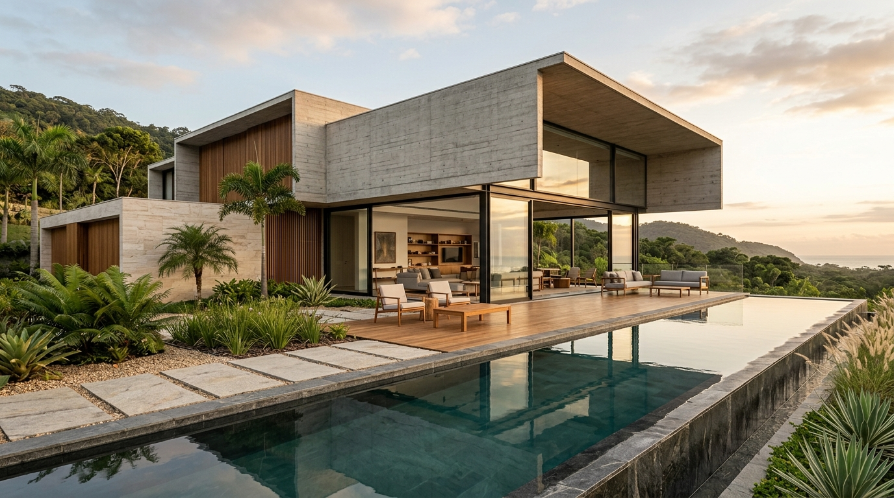
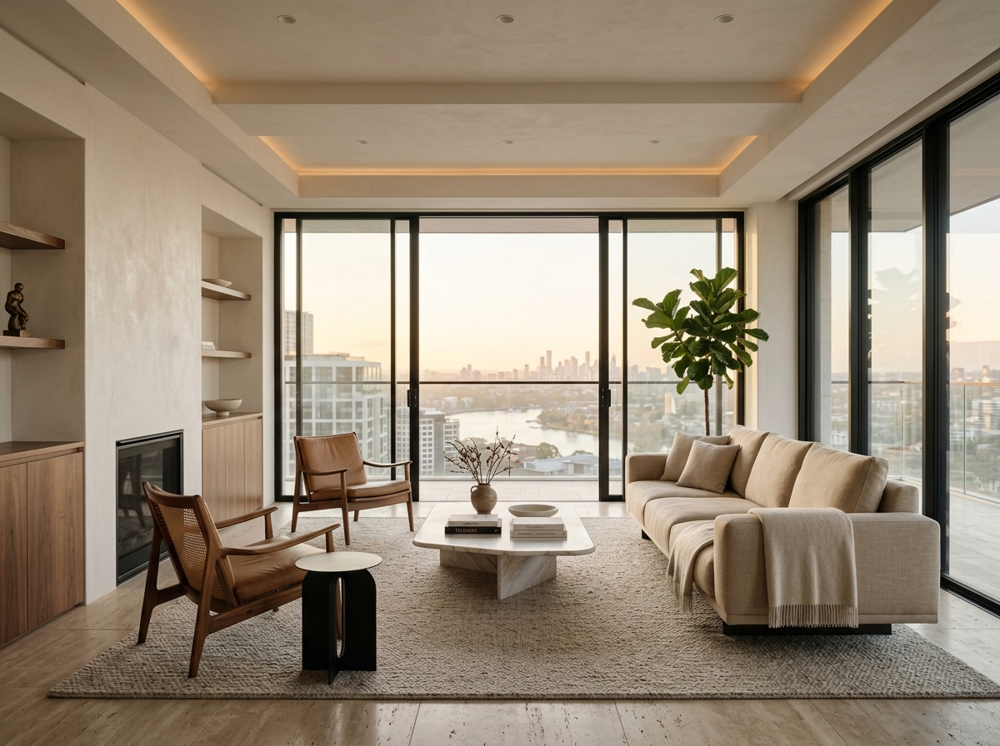
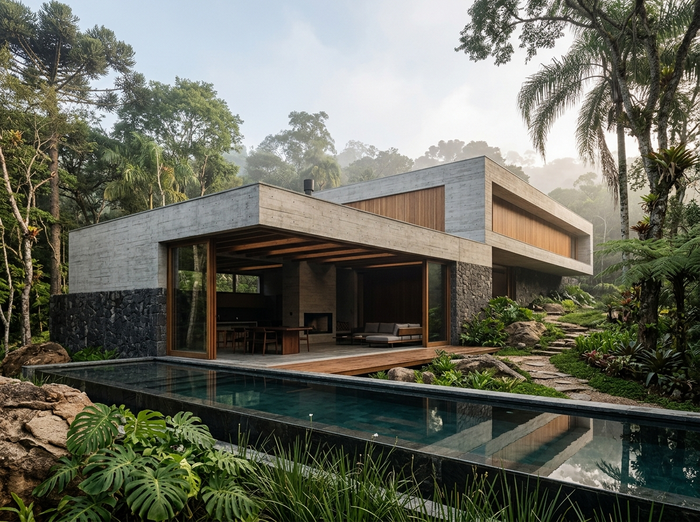

01RESIDENCIAL
2026Projetos pensados para equilibrar matéria, luz e proporção — criando ambientes contemporâneos que fazem sentido hoje e no futuro.
Explorar projetos ↘Cada projeto começa com uma leitura cuidadosa do lugar, da rotina e das pessoas que irão vivê-lo.
Da primeira ideia aos detalhes finais, buscamos uma arquitetura silenciosa, precisa e duradoura.

01
02
03Projetos residenciais e comerciais, do estudo inicial ao detalhamento necessário para a execução.
Conversar sobre um projeto ↗Ambientes completos com curadoria de materiais, mobiliário, iluminação e composição.
Conversar sobre um projeto ↗Orientação para transformar um espaço existente com decisões mais seguras e coerentes.
Conversar sobre um projeto ↗A FORMA é um estúdio conceitual de arquitetura e interiores que acredita em espaços com identidade, mas sem excessos.
Trabalhamos com materiais naturais, proporções, luz e circulação para construir experiências que sejam bonitas, funcionais e verdadeiramente habitáveis.
Conversamos sobre o espaço, necessidades, referências e objetivos.
Transformamos essas informações em conceito, layout, materiais e atmosfera.
Refinamos cada escolha para que o projeto possa sair do papel com clareza.
Conte brevemente o que você está planejando e vamos conversar.
Falar sobre meu projeto ↗ Atendimento mediante agendamento